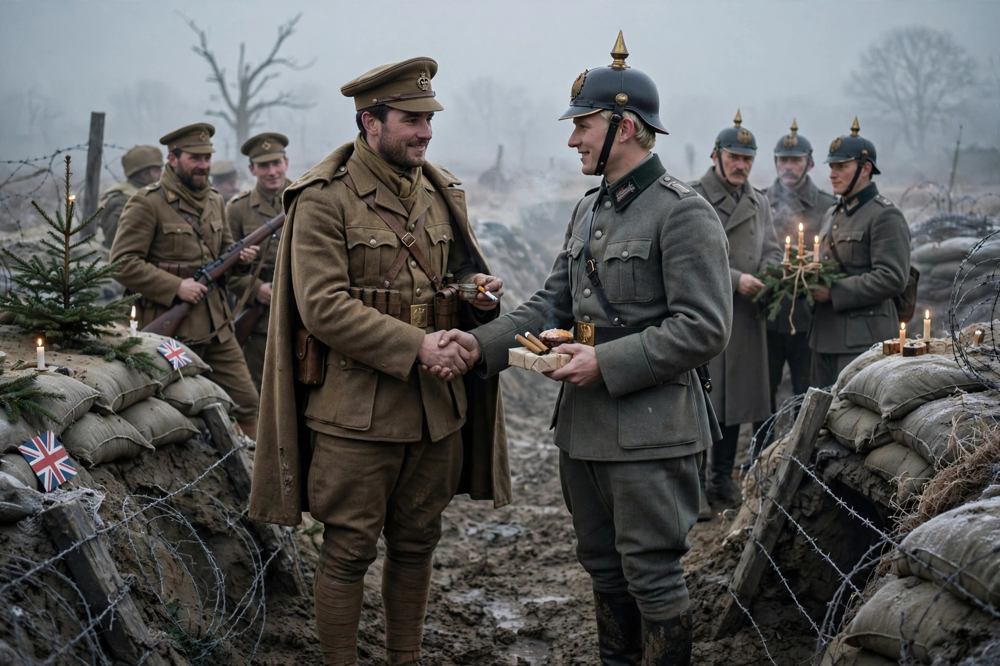

Christmas truce
The Christmas truce (German: Weihnachtsfrieden; French: Trêve de Noël) was a series of widespread unofficial ceasefires along the Western Front of the First World War around Christmas 1914. In the week leading up to the holiday, German and British soldiers crossed trenches to exchange greetings and talk; in some areas men from both sides ventured into no man's land on Christmas Eve and Christmas Day to exchange food and souvenirs, hold joint burial ceremonies, and sing carols.

Background
By December 1914 the war had settled into static trench warfare. The opposing trenches in many places were only tens of metres apart, and informal local truces for burying the dead or recovering wounded had already occurred. Pope Benedict XV had appealed for an official Christmas ceasefire, which the belligerent governments declined.
Events of December 1914
On Christmas Eve, German troops in some sectors decorated their trenches with candles and trees and sang carols; British troops responded with their own songs. On Christmas Day soldiers met in no man's land, exchanged gifts such as food, tobacco, alcohol, and buttons, and buried their dead. Letters home and later memoirs also describe impromptu football kickabouts, though evidence for an organised match is thin. Perhaps 100,000 British and German troops participated along the front.
Aftermath
High commands on both sides strongly disapproved. In later years artillery barrages were ordered on Christmas Eve to prevent a recurrence, and specific orders forbade fraternisation. Smaller truces did occur in 1915 and at other festivals, but never on the scale of 1914. The truce became a lasting symbol of shared humanity amid the war.
See also
Categories: First World War | Christmas traditions | Ceasefires